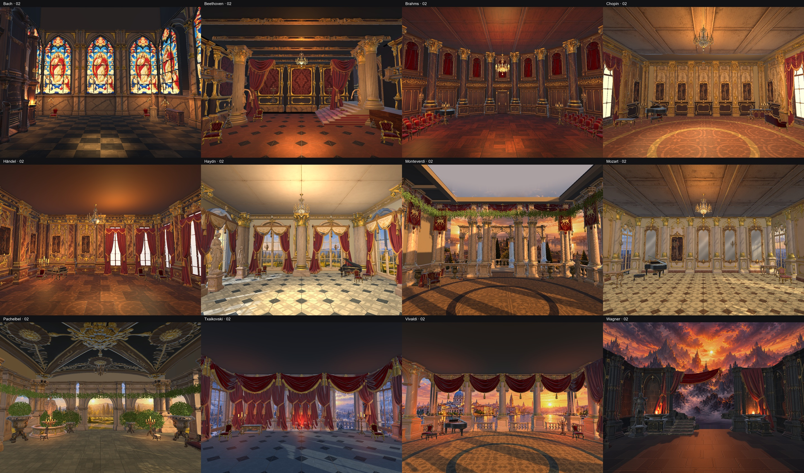
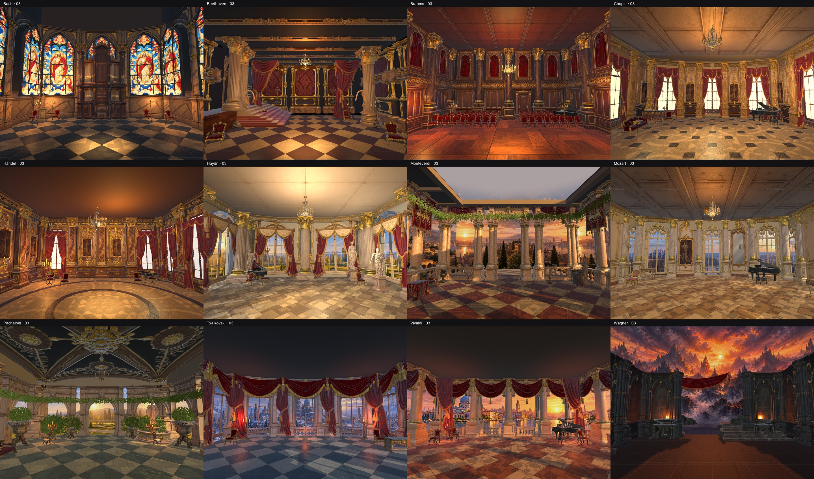

MusicGame · variants 02 i 03
Captures reals de Unity en qualitat High. Dues distribucions per compositor, amb materials de terra diferents del base 01.
Totes les variants 02

Totes les variants 03

Bach
Beethoven
Brahms
Chopin
Handel
Haydn
Monteverdi
Mozart
Pachelbel
Tchaikovsky
Vivaldi
Wagner